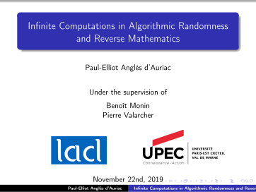
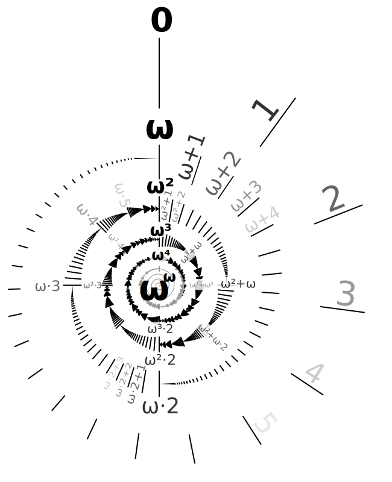
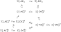
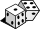

Infinite Computations
I
Algorithmic randomness
II
Reverse Mathematics
III
in and .
Basics
Links between computations and definability
\(M\)
\(\{n\in\mathbb N:M(n)=1\}\)
\(\{n\in\mathbb N:\phi(n)\}\)
\(?\)
For every set \(A\subseteq\mathbb N\), we have :
\(A\) is \(\Delta^0_{n+1}\) definable
\(\Longleftrightarrow\)
\(A\) is computable with oracle \(\emptyset^{(n)}\)
\(A\) is \(\Sigma^0_{n+1}\) definable
\(\Longleftrightarrow\)
\(A\) is computably enumerable with oracle \(\emptyset^{(n)}\)
\(A\) is \(\Pi^0_{n+1}\) definable
\(\Longleftrightarrow\)
\(A\) is co-computably enumerable with oracle \(\emptyset^{(n)}\)
These links allow to use computability theory in other domains of mathematical logic:
- Proof Theory, studying provability from the mathematical point of view.
- Descriptive set theory, studying the properties of the definable subsets of the reals.
Computations
A computation is the mechanical execution of a set of basic operations.
For instance, computers perform computations, as well as us when we sum integers.
- A function is computable if the image of an element can be found by a computation.
- A set of integers is computable if the belonging of an element to the set can be found by a computation.
\(n\)
\(f(n)\)
\(n\in A\)
\(f\) computable
\(A\) computable
\(A\) computably enumerable
Definability
- Proving a statement usually requires to define mathematical objects.
- In Mathematical Logic, we are especially interested in formulas to define sets by comprehension, and in their complexities.
- A formula is a set of symbols. In particular, "\(\forall\)" means "for all" and "\(\exists\)" means "there exists".
- The complexity of a formula is the number of alternation of quantifiers, with a \(\Pi\) when it begins by "\(\forall\)", and a \(\Sigma\) otherwise.
- A set is of a given complexity if it is defined by comprehension by a formula of this complexity.
- The \(\Delta_n\) sets are those that are both \(\Pi_n\) and \(\Sigma_n\).
Let \(N\) be the smallest integer such that \(f(N)\gt 100\).
Let \(A\) be the set of even numbers.
Let \(T\) be the set of functions from \(\mathbb N\) to \(\mathbb N\) that are total.
The formula for "\(n\) is even" : \(\exists m, n=2m\)
The formula for "\(f\) is total" : \(\forall n\ \exists m, f(n)=m\)
\(\exists m, n=2m\) is \(\Sigma_1\) while \(\forall n\ \exists m, f(n)=m\) is \(\Pi_2\)
The set of even integers is \(\Sigma_1\) while The set of total functions is \(\Pi_2\)
Integer quantification : \(\Sigma^{\color{red}0}_n\)
Set of integers quantification : \(\Sigma^{\color{red}1}_n\)
Set of integers quantification : \(\Sigma^{\color{red}1}_n\)
Hindman's Theorem
For every coloring of the integers in a finite number of colors, there exists an infinite set \(H\subseteq\mathbb N\) such that the set of finite sums of elements from \(H\) is monochromatic.
Example of coloring of the integers :
0
1
2
3
4
5
6
7
8
9
10
11
12
13
14
15
16
17
18
19
...
45
46
...
\(H=\)
0
1
2
3
4
5
6
7
8
9
10
11
12
13
14
15
16
17
18
19
...
45
46
...
Color of the sum: \(=\)
0
1
2
3
4
5
6
7
8
9
10
11
12
13
14
15
16
17
18
19
...
45
46
...
State of the art of the Reverse Mathematics of Hindman's theorem.
- Hindman's theorem is provable in \(\mathrm{ACA}_0^+\).
- Every finite coloring \(c\) admits a homogeneous set \(H\) computable in the \(\omega+2\)-th Turing jump of \(c\).
- Hindman's theorem prove \(\mathrm{ACA}_0\).
- There exists a computable finite coloring such that all homogeneous sets \(H\) compute \(\emptyset'\).
- Is Hindman's theorem equivalent to \(\mathrm{ACA}_0\)? Or to \(\mathrm{ACA}_0^+\)? Or strictly in between?
- Given a computable finite coloring, does there always exists an arithmetical solution? Or does there exists a finite computable coloring such that all homogeneous sets compute \(\emptyset^{(\omega)}\) ?
Idea of the proof
Define a largeness notion such that we can prove: $$\text{There exists a large color}\tag{1}$$ $$A\text{ is large }\Longrightarrow \exists n\in A, A\cap A+n\text{ is large. }\tag{2}$$
Possible largeness notions:
- Large ≡ infinite
- Large ≡ contains \(\mathrm{FS}(X)\) for an infinite \(X\).
- Large ≡ for some infinite subset \(X\), there is no solution for an other color inside \(\mathrm{FS}(X)\) (Baumgartner)
- Large ≡ belongs to an idempotent ultrafilter (Galvin-Glazer)
Effectivizing the proof
The problem is that the \(n\) found in (2) is chosen in a very non uniform way between a finite number of possible candidates.
$$A\text{ large }\Longrightarrow \exists {\color{maroon}n_0,\cdots, n_N}\in A, \bigcup_{i\lt N}A\cap A+{\color{maroon}n_i}\text{ est large. }$$
A full-match for a coloring \(c\) is a couple \((F,S)\) where \(F\) is a finite set, and for every finite sum \(x\) of elements of \(S\), there exists \(a\in F\) such that \(c(a)=c(x)=c(a+x)\).
The complexity of a full-match is essential to understand the complexity of a solution to Hindman's theorem!
Is it true that for every computable coloring, there exists a computable full-match?
- An affirmative answer would prove Hindman's theorem equivalent to \(\mathrm{ACA}_0\)
- A negative answer to the question was published in 2011, but there was an error in the proof.
Every computable coloring in two colors admits a computable left-match.
Consider the following property:
$$\exists F\subseteq C_i, \forall x\in\mathrm{FS}(S),\ \exists a\in F,\ c(a+x) = j\tag{\(\mathrm{MM}_{i,j}\)}$$
Every coloring in two colors satisfying one of the following properties:
- \(\lnot(\mathrm{MM}_{0,1})\) or \(\lnot(\mathrm{MM}_{1,0})\)
- \((\mathrm{MM}_{0,0})\) and \((\mathrm{MM}_{1,1})\)
- \(\lnot(\mathrm{MM}_{0,0})\) and \(\lnot(\mathrm{MM}_{1,1})\)
Infinite time computation
Usually, a computation halts in a finite number of steps. An algorithm consists of the set of rules to go from one step to the next one.
We now want that the number of steps can be infinite. We shall however keep the notion of next one.
\(\omega\)
\(\omega+1\)
\(\omega+\omega\)
\(\omega\times\omega\)
\(\omega^{\omega}\)

Three types of infinite time computations
- We defined several notions of infinite computations:
- Of length \(\omega_1^{\mathrm{CK}}<\lambda<\zeta<\Sigma\) or any \(\alpha\) admissible
- They relativizes, except for \(\alpha\) computable
- These notions yields new complexity notions on sets, much higher the usual one, but with a similar behaviour!
Infinite Time Turing Machine
An Infinite Time Turing Machine (ITTM) is a Turing Machine with three tapes (input, work and output) with a special state (called limit state). An infinite time computation is a sequence of configurations, indexed by an ordinal, such that:
- At successor steps, the rules are the same as for a regular Turing machine,
- At limit steps :
- The state is the limit state
- The head of the tapes is at the leftmost position
- Each cell of the memory tape is the \(\limsup\) of its previous values: $$T_\lambda(n)=\limsup_{\alpha<\lambda}T_\alpha(n)$$
A real \(x\) is:
- Writable if at some step, the machine has \(x\) written on its output tape and halts,
- Eventually writable if at some step, the machine has \(x\) written on its output tape and never modifies it afterward,
- Accidentally writable if at some step, the machine has \(x\) written on its output tape.
Let \(\lambda\), \(\zeta\) and \(\Sigma\) the lexicographically least triplet of ordinals such that:
$$ L_{\color{red}\lambda}\prec_1 L_{\color{blue}\zeta} \prec_2 L_{\color{green}\Sigma}$$
Then:
- \(\lambda\) is the supremum of the halting times and of the writable ordinals by an ITTM
- \(\zeta\) is the supremum of the stabilisation times and of the eventually writable ordinals by an ITTM
- \(\Sigma\) is the supremum of the loopless times, and of the accidentally writable ordinals by an ITTM
Let \(\lambda^x\), \(\zeta^x\) and \(\Sigma^x\) be the lexicographically least triplet of ordinals such that:
$$ L_{\color{red}\lambda^x}[x]\prec_1 L_{\color{blue}\zeta^x}[x] \prec_2 L_{\color{green}\Sigma^x}[x]$$
Then:
- \(\lambda^x\) is the supremum of the halting times and of the writable ordinals by an ITTM relative to \(x\).
- \(\zeta^x\) is the supremum of the stabilisation times and of the eventually writable ordinals by an ITTM relative to \(x\).
- \(\Sigma^x\) is the supremum of the loopless times, and of the accidentally writable ordinals by an ITTM relative to \(x\).
- \(\lambda\)-computability and writability coincide
- \(\zeta\)-computability and eventual writability coincide
- \(\Sigma\)-computability and accidental writability coincide
For the subsets of reals \(A\subseteq\mathbb R\):
- ITTM-decidable : \(\forall x\in\mathbb R\), we have \(x\in A\Longleftrightarrow M(x)\downarrow=1\) for some total ITTM \(M\).
- ITTM-semi-decidable : \(\forall x\in\mathbb R\), we have \(x\in A\Longleftrightarrow M(x)\downarrow\).
Higher Computability
- A set \(A\subseteq\mathbb N\) is \(\Sigma^1_1\) if it is definable by a formula of the form $$\exists X\in \mathcal P(\mathbb N),\ \psi(X,x)$$ where \(\psi(X,x)\) is arithmetic.
- A set \(A\subseteq\mathbb N\) is \(\Pi^1_1\) if its complementary is \(\Sigma^1_1\).
- A set \(A\subseteq\mathbb N\) is \(\Delta^1_1\) if it is both \(\Sigma^1_1\) and \(\Pi^1_1\).
A set \(A\subseteq\mathbb N\) is
- higher computable relative to \(x\) if it is \(\Delta^1_1\)\(\Delta^1_1(x)\).
- higher computably enumerable relative to \(x\) if it is \(\Pi^1_1\)\(\Pi^1_1(x)\).
- higher co-computably enumerable relative to \(x\) if it is \(\Sigma^1_1\)\(\Sigma^1_1(x)\).
Links with infinite time computations
A computable ordinal :
The ordinal \(\omega_1^{\mathrm{CK}}\)\(\omega_1^{x}\) is the smallest ordinal that is not computable relative to \(x\).
A set \(A\subseteq\mathbb N\) is
- higher computable relative to \(x\) if and only if it is \(\omega_1^{\mathrm{CK}}\)-computable\(\omega_1^{x}\)-calculable.
- higher c.e. relative to \(x\) if and only if it is \(\omega_1^{\mathrm{CK}}\)-c.e.\(\omega_1^{x}\)-c.e..
- higher co-c.e. relative to \(x\) if and only if it is \(\omega_1^{\mathrm{CK}}\)-co-c.e.\(\omega_1^{x}\)-co-c.e..
\(\alpha\)-computability
- A starting state \(C_0\) defining a machine configuration.
- Rules A \(\Delta_1\) formula to go from \(C_i\) to \(C_{i+1}\) from \((C_\beta)_{\beta<\lambda}\) to \(C_\lambda\).
- First stage: index machine configurations by an ordinal \(\alpha\).
- Second stage: replace rules by definability.
Let us define \((L_\alpha)_{\alpha\in\mathrm{Ord}}\) the following way:
- \(L_0 = \emptyset\)
- \(L_{\alpha+1} = \{ A\subseteq L_\alpha : \) \(A\) is definable in \(L_\alpha\}\)
- \(L_\lambda = \bigcup_{\alpha<\lambda}L_\alpha\)
We say that \(A\subseteq\mathbb N\) is
Not all ordinals are good to bound a computation time:
- \(\alpha\)-computable if \(A\) is \(\Delta_1\)-definable in \(L_\alpha\),
- \(\alpha\)-c.e. if \(A\) is \(\Sigma_1\)-definable in \(L_\alpha\),
- \(\alpha\)-co-c.e. if \(A\) is \(\Pi_1\)-definable in \(L_\alpha\).
We say that \(\alpha\) is admissible if for all \(\alpha\)-computable function \(f:\beta<\alpha\to\alpha\), we have \(\lim_{\gamma<\beta} f(\gamma)<\alpha\)
Algorithmic randomness
Study the properties of random reals.
Consider the two following sequences, and their probabilities:
\(\mathbb P(\)
\()=1\)
\()=0.5\)
\()=0.25\)
\()=0.125\)
\() ={2^{-4}}\)
\() ={2^{-5}}\)
\() ={2^{-6}}\)
\() ={2^{-7}}\)
\() ={2^{-8}}\)
\() ={2^{-9}}\)
\() ={2^{-10}}\)
\() ={2^{-11}}\)
\() ={2^{-12}}\)
\() ={2^{-13}}\)
\() ={2^{-14}}\)
\(\mathbb P(\)
\()=1\)
\()=0.5\)
\()=0.25\)
\()=0.125\)
\() ={2^{-4}}\)
\() ={2^{-5}}\)
\() ={2^{-6}}\)
\() ={2^{-7}}\)
\() ={2^{-8}}\)
\() ={2^{-9}}\)
\() ={2^{-10}}\)
\() ={2^{-11}}\)
\() ={2^{-12}}\)
\() ={2^{-13}}\)
\() ={2^{-14}}\)
We remark:
- Both have the same probabilities
- The probability tends toward 0
- However, the former seems more random than the latter...
Measure Theory doesn't answer this paradox. Algorithmic randomness does!
An object is random if it doesn't have any discriminatory and simple property.
A real \(x\in {2^{\mathbb N}}\) is weak-\(n\)-random if it has no \(\Pi^0_n\) property of measure 0.
A ML-test is a \(\Pi^0_2\) set \(A\), such that \(A\) is of the form $$\bigcap_{n\in\mathbb N} U_n$$ where \(\forall n,\ \mu(U_n)\leq {2^{-n}}\). A real \(x\in{2^{\mathbb N}}\) is ML-random if it avoids all ML-tests.
- Each complexity layer induces a randomness notion. We do not define what random real is, but a hierarchy on the reals corresponding to what extent they are random.
- Each level has its weaknesses :
- Some reals are strangely ML-random
- For all \(n\), there exists an arithmetic weak-\(n\)-random real.
- This suggests the study of strong randomness notions.

Higher order randomness
Higher order randomness is already developed. It adapts classical randomness notions, using the analogy between \(\Pi^1_1\) and computably enumerable:
A real \(x\) is \(\Pi^1_1\)-ML-random if it belongs to no set \(A\) of the form $$A=\bigcap_n{[W_n]^\prec}$$ where the sets \(W_n\) are uniformly \(\Pi^1_1\) and \(\mu([W_n])\leq{2^{-n}}\).
It also introduces new notions :
A real \(x\) is \(\Delta^1_1\)-random if it avoids all \(\Delta^1_1\) measure 0 properties.
A real \(x\) is \(\Pi^1_1\)-random if it avoids all \(\Pi^1_1\) measure 0 properties.
A real is \(\Pi^1_1\)-random if and only if it is \(\Delta^1_1\)-random and \(\omega_1^{\mathrm{CK}}=\omega_1^{\mathrm{CK(x)}}\)
We have the following strict inclusion:
$$\Delta^1_1\text{-randomness}\subsetneq\Pi^1_1\text{-ML-randomness}\subsetneq\Pi^1_1\text{-randomness}$$
Randomness for \(\alpha\)-computability and Infinite Time Turing Machine
The extension of the definitions from higher order randomness is straightforward:
A real \(x\) is random over \(L_\alpha\) if it avoids every set \(A\subseteq\mathbb R\), with Borel code in \(L_\alpha\) and of measure 0.
A real \(x\) is ITTM-random if it avoids every set \(A\subseteq\mathbb R\) ITTM-semi-decidable and of measure 0.
A real \(x\) is \(\alpha\)-ML-random if it avoids every set \(A\) of the form $$A=\bigcap_n{[W_n]^\prec}$$ where the sets \(W_n\) are uniformly \(\alpha\)-computably enumerable and \(\mu([W_n])\leq{2^{-n}}\). It is ITTM-ML-random if it is \(\Sigma\)-ML-random.
A real is \(\Pi^1_1\)-random if and only if it is \(\Delta^1_1\)-random and \(\omega_1^{\mathrm{CK}}=\omega_1^{\mathrm{CK(x)}}\)
A real \(x\) is ITTM-random if and only if it is random over \(L_\Sigma\) and \(\Sigma^x=\Sigma\)
We have the following strict inclusion:
$$\Delta^1_1\text{-randomness}\subsetneq\Pi^1_1\text{-ML-randomness}\subsetneq\Pi^1_1\text{-randomness}$$
✓
For which \(\alpha\) do we have :
$$\text{randomness over }L_\alpha\subsetneq\alpha\text{-ML-randomness}\text{ ?}$$
Do we have
$$\text{randomness over }L_\Sigma\subsetneq\text{ITTM-ML-randomness}\subsetneq\text{ITTM-randomness}\text{ ?}$$
Let \(\alpha\) be such that \(L_\alpha\models\text{"everything is countable"}\). Then the following statements are equivalent:
- \(\alpha\)-ML-randomness is strictly stronger than randomness over \(L_\alpha\).
- \(\alpha\) is projectible in \(\omega\).
- There exists a universal \(\alpha\)-ML-test.
$$\text{Randomness over }L_\lambda\subsetneq\lambda\text{-ML-randomness}$$
$$\text{Randomness over }L_\zeta=\zeta\text{-ML-randomness}$$
$$\text{Randomness over }L_\Sigma\subsetneq\Sigma\text{-ML-randomness}$$
Do we have:
$$\text{Randomness over }L_\Sigma\subsetneq\text{ITTM-ML-randomness}\subsetneq\text{ITTM-randomness}\text{ ?}$$
$$\text{Randomness over }L_\Sigma\subseteq\text{ITTM-randomness}\subsetneq\text{ITTM-ML-randomness}$$
$$\text{Randomness over }L_\Sigma\neq\text{ITTM-randomness ?}$$
Does \(x\) random over \(L_\Sigma\) implies $$L_\zeta[x]\not\prec_2L_\Sigma[x]\text{ ?}$$
If \(x\) is generic over \(L_\Sigma\) then $$L_\zeta[x]\prec_2L_\Sigma[x].$$
We therefore have:
$$\text{Genericity over }L_\Sigma = \text{ITTM-genericity}$$
Reverse Mathematics
The goal of reverse mathematics is to find the necessary axioms to prove theorems from ordinary mathematics.
Prove the axioms, supposing the theorem.
- First discovery: The vast majority of natural theorems are equivalent to one out of five axiomatic systems.
- \(\mathrm{RCA}_0\), constructive mathematics,
- \(\mathrm{WKL}_0\), compactness,
- \(\mathrm{ACA}_0\), arithmetical comprehension,
- \(\mathrm{ATR}_0\), arithmetical transfinite induction,
- \(\Pi^1_1\text{-}\mathrm{CA}_0\), analytic comprehension.
The Big Five - Second discovery: lots of theorems from Ramsey Theory avoid this structure.
Using computability in reverse mathematics
Two theorems \(T_0\) and \(T_1\) are said equivalent over \(\mathrm{RCA}_0\) if:
The natural axioms in mathematics are existence axioms. To the use of an axiom corresponds a computable complexity.
- Taking \(T_0\) and \(\mathrm{RCA}_0\) as axioms, we can prove \(T_1\)
- Taking \(T_1\) and \(\mathrm{RCA}_0\) as axioms, we can prove \(T_0\)
Axiom
\(\mathrm{RCA}_0\)
\(\mathrm{WKL}_0\)
\(\mathrm{ACA}_0\)
\(\mathrm{ATR}_0\)
\(\Pi^1_1\text{-}\mathrm{CA}_0\)
Computable complexity
Computable
PA
Finite number of Turing jump
Iterated jump hierarchy
Higher c.e.
During the reverse mathematical study of a theorem, we can see things in two ways:
- What are the used axioms, are they really necessary?
- What is the computable complexity of the objects in the proof, can we lower it?
Reverse Math : A step toward computability
Proof-program duality has its limits:- Non-uniformity is possible in a proof
- Some notions depend on the model
- A proof is not sensitive to the ressources
We see theorems of the form \(\forall x\in X,\ \exists y\in Y,\ \phi(x,y)\) as problems, with \(x\) being an instance, and \(y\) a solution.
Instance : \(f\) continuous with \(f(0)\lt 0\) and \(f(1)\gt 0\).
Solution : \(x\) such that \(f(x)=0\)
A problem \(P\) is Weihrauch reducible to a problem \(Q\), written \(P\leq_{\mathrm W}Q\) if, given a solver for \(Q\), we can build a solver for \(P\) the following way:
If \(I_0\) is an instance for \(P\), then
Solver for \(P\)
\(I_0\)
\(I_0\)
\(I_1\)
\(S_1\)
\(S_0\)
\(f\) comp.
\(g\) comp.
Solver for \(Q\)
- \(I_1 = f(I_0)\) is an instance for \(Q\), such that:
- For every solution \(S_1\) for \(I_1\), we have:
- \(S_0=g(S_1, I_0)\) is a solution for \(I_0\)
Comparing analytical axioms of choice
\({\Sigma^1_1\text{-}\mathrm{AC}_{\mathbb 2}}\) is the problem with instance: a list of non empty \(\mathbf{\Sigma^1_1}\) sets \(A_n\subseteq \{0;1\}\), and solution: an element \(a_n\in A_n\) for each \(n\).
\({\Sigma^1_1\text{-}\mathrm{DC}_{\mathbb 2}}\) is the problem with instance: a \(\mathbf{\Sigma^1_1}\) tree \(T\subseteq \{0;1\}^{<\omega}\) with a path, and solution: an element \((a_n)_{n\in\mathbb N}\in [T]\).
$${\Sigma^1_1\text{-}\mathrm{AC}_{\mathbb 2}}\equiv_{\mathrm W} {\Sigma^1_1\text{-}\mathrm{DC}_{\mathbb 2}}$$
Do we also have \({\Sigma^1_1\text{-}\mathrm{AC}_{\mathbb N}}\equiv_{\mathrm W} {\Sigma^1_1\text{-}\mathrm{DC}_{\mathbb N}}\)?
Co-enumerations in time \(\omega_1^{\mathrm{CK}}\)
\(\vdots\)
\(\vdots\)
\(\vdots\)
\(\vdots\)
\(\vdots\)
\(\vdots\)
\(\vdots\)
\(\vdots\)
\(A_0=\{\ \ \ \ \ \ \ \ \ \ \ \ \ \}\)
\(A_1=\{\ \ \ \ \ \ \ \ \ \ \ \ \ \}\)
\(A_2=\{\ \ \ \ \ \ \ \ \ \ \ \ \ \}\)
\(A_3=\{\ \ \ \ \ \ \ \ \ \ \ \ \ \}\)
\(A_4=\{\ \ \ \ \ \ \ \ \ \ \ \ \ \}\)
\(A_5=\{\ \ \ \ \ \ \ \ \ \ \ \ \ \}\)
\(A_6=\{\ \ \ \ \ \ \ \ \ \ \ \ \ \}\)
\(A_7=\{\ \ \ \ \ \ \ \ \ \ \ \ \ \}\)
\(A_i=\{\)
$${\Sigma^1_1\text{-}\mathrm{DC}_{\mathbb N}}\not\leq_{\mathrm W}\Sigma^1_1\text{-}\mathrm{AC}_{\mathbb N}$$
$$\mathrm{ATR}\not\leq_{\mathrm W}\Sigma^1_1\text{-}\mathrm{AC}_{\mathbb N}$$

Thank you for your attention!
- Reverse mathematics of Full-matches and Hindman's theorem, as well as dense Hindman Theorem.
- ITTM-randomness versus randomness over \(L_\Sigma\).
- \(\Sigma^1_1\text{-}\mathrm{DC}_{\mathbf N}\leq_{\mathrm{aW}}\Sigma^1_1\text{-}\mathrm{AC}_{\mathbf N}\)?
\(\infty\)

Mathematics